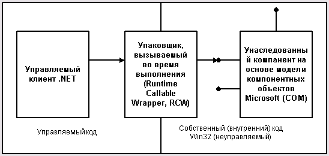

Оглавление
Введение в C#
На сегодняшний момент язык программирования C# один из самых мощных, быстро развивающихся и востребованных языков в ИТ-отрасли. В настоящий момент на нем пишутся самые различные приложения: от небольших десктопных программок до крупных веб-порталов и веб-сервисов, обслуживающих ежедневно миллионы пользователей.
C# уже не молодой язык и как и вся платформа .NET уже прошел большой путь. Первая версия языка вышла вместе с релизом Microsoft Visual Studio .NET в феврале 2002 года. Текущей версией языка является версия C# 11, которая вышла 8 ноября 2022 года вместе с релизом .NET 7.
C# является языком с Си-подобным синтаксисом и близок в этом отношении к C++ и Java. Поэтому, если вы знакомы с одним из этих языков, то овладеть C# будет легче.
C# является объектно-ориентированным и в этом плане много перенял у Java и С++. Например, C# поддерживает полиморфизм, наследование, перегрузку операторов, статическую типизацию. Объектно-ориентированный подход позволяет решить задачи по построению крупных, но в тоже время гибких, масштабируемых и расширяемых приложений. И C# продолжает активно развиваться, и с каждой новой версией появляется все больше интересных функциональностей.
Роль платформы .NET
Когда говорят C#, нередко имеют в виду технологии платформы .NET (Windows Forms, WPF, ASP.NET, Xamarin). И, наоборот, когда говорят .NET, нередко имеют в виду C#. Однако, хотя эти понятия связаны, отождествлять их неверно. Язык C# был создан специально для работы с фреймворком .NET, однако само понятие .NET несколько шире.
- Поддержка нескольких языков. Основой платформы является общеязыковая среда исполнения Common Language Runtime (CLR), благодаря чему .NET поддерживает несколько языков: наряду с C# это также VB.NET, C++, F#, а также различные диалекты других языков, привязанные к .NET, например, Delphi.NET. При компиляции код на любом из этих языков компилируется в сборку на общем языке CIL (Common Intermediate Language) - своего рода ассемблер платформы .NET. Поэтому при определенных условиях мы можем сделать отдельные модули одного приложения на отдельных языках.
- Кроссплатформенность. .NET является переносимой платформой (с некоторыми ограничениями). Например, последняя версия платформы на данный момент - .NET 7 поддерживается на большинстве современных ОС Windows, MacOS, Linux. Используя различные технологии на платформе .NET, можно разрабатывать приложения на языке C# для самых разных платформ - Windows, MacOS, Linux, Android, iOS, Tizen.
- Мощная библиотека классов. .NET представляет единую для всех поддерживаемых языков библиотеку классов. И какое бы приложение мы не собирались писать на C# - текстовый редактор, чат или сложный веб-сайт - так или иначе мы задействуем библиотеку классов .NET.
- Разнообразие технологий. Общеязыковая среда исполнения CLR и базовая библиотека классов являются основой для целого стека технологий, которые разработчики могут задействовать при построении тех или иных приложений. Например, для работы с базами данных в этом стеке технологий предназначена технология ADO.NET и Entity Framework Core. Для построения графических приложений с богатым насыщенным интерфейсом - технология WPF и WinUI, для создания более простых графических приложений - Windows Forms. Для разработки кроссплатформенных мобильных и десктопных приложений - Xamarin/MAUI. Для создания веб-сайтов и веб-приложений - ASP.NET и т.д.
- Производительность. Согласно ряду тестов веб-приложения на .NET 7 в ряде категорий сильно опережают веб-приложения, построенные с помощью других технологий. Приложения на .NET 7 в принципе отличаются высокой производительностью.
Также еще следует отметить такую особенность языка C# и фреймворка .NET, как автоматическая сборка мусора. А это значит, что нам в большинстве случаев не придется, в отличие от С++, заботиться об освобождении памяти. Вышеупомянутая общеязыковая среда CLR сама вызовет сборщик мусора и очистит память.
Управляемый и неуправляемый код
Нередко приложение, созданное на C#, называют управляемым кодом (managed code). Что это значит? А это значит, что данное приложение создано на основе платформы .NET и поэтому управляется общеязыковой средой CLR, которая загружает приложение и при необходимости очищает память. Но есть также приложения, например, созданные на языке С++, которые компилируются не в общий язык CIL, как C#, VB.NET или F#, а в обычный машинный код. В этом случае .NET не управляет приложением.
В то же время платформа .NET предоставляет возможности для взаимодействия с неуправляемым кодом.
Упаковщик, вызываемый во время совместного выполнения управляемого и неуправляемого кодов
JIT-компиляция
Как выше писалось, код на C# компилируется в приложения или сборки с расширениями exe или dll на языке CIL. Далее при запуске на выполнение подобного приложения происходит JIT-компиляция (Just-In-Time) в машинный код, который затем выполняется. При этом, поскольку наше приложение может быть большим и содержать кучу инструкций, в текущий момент времени будет компилироваться лишь та часть приложения, к которой непосредственно идет обращение. Если мы обратимся к другой части кода, то она будет скомпилирована из CIL в машинный код. При том уже скомпилированная часть приложения сохраняется до завершения работы программы. В итоге это повышает производительность.
По сути это все, что вкратце надо знать о платформе .NET и языке C#. А теперь создадим первое приложение.
Первое приложение на C#
Создадим первую программу на языке C#. Что для этого нужно? Прежде всего для написания кода программы нам понадобится текстовый редактор. В принципе можно выбрать любой понравившийся текстовый редактор, например, встроенный в Windows по умолчанию блокнот. Но я в данном случае буду ориентироваться на более изощренный текстовый редактор Visual Studio Code.
Второй необходимый компонент для создания программ - компилятор. Для компиляции, построения, запуска и ряда других задач Microsoft предоставляет набор инструментов, который называется .NET SDK. Загрузим его со страницы .NET SDK
Теперь создадим консольное приложение, которое будет выводить на "Hello world"
using System;
namespace HelloWorld
{
class Program
{
static void Main(string[] args)
{
Console.WriteLine("Hello World!");
}
}
}
В начале файла мы видим директиву using, после которой идёт название подключаемого пространства имён. Пространства имён необходимы для организации классов в общие блоки. Например, в первой строке подключается пространство имён System, которое содержит фундаментальные и базовые классы платформы .NET.
C# имеет C-подобный синтаксис, и каждая строка завершается точкой с запятой, а каждый блок кода помещается в фигурные скобки. Далее начинается уже наше пространство имён HelloWorld, которое будет создавать отдельную сборку или исполняемую программу. Сначала идёт ключевое слово namespace, после которого следует название пространства имён. По умолчанию Visual Studio даёт ему название проекта. Далее внутри фигурных скобок идёт блок пространства имён.
Пространство имён может включать другие пространства или классы. В нашем случае по умолчанию сгенерирован один класс — Program. Классы объявляются похожим способом: сначала идёт ключевое слово class, а потом название класса, и далее блок самого класса в фигурных скобках.
Класс может содержать различные переменные, методы, свойства, прочие инструкции. В данном случае объявлен один метод Main. В программе на C# метод Main является входной точкой программы, с него начинается всё управление. Это обязательный элемент любой программы.
Слово static указывает, что метод Main статический, а слово void — что он не возвращает никакого значения. Далее в скобках у нас идут параметры метода. string[] args — это массив с именем args, который хранит значения типа string, то есть строки. В данном случае они нам пока не нужны, но в реальной программе это те параметры, которые передаются при запуске программы из консоли.
Внутри метода располагаются действия, которые этот метод выполняет. По умолчанию он содержит одно действие: Console.WriteLine("Hello World!"); - выводит в консоль строку "Hello World!".
Опрос
хотелось бы узнать ваше мнение по данной статье. В предложенной ниже форме введите свои данные и ответьте на несколько вопросов.